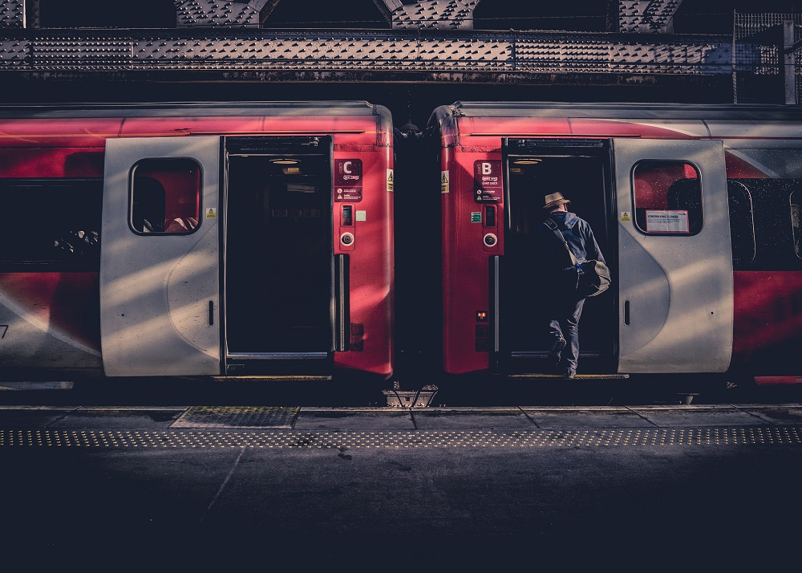
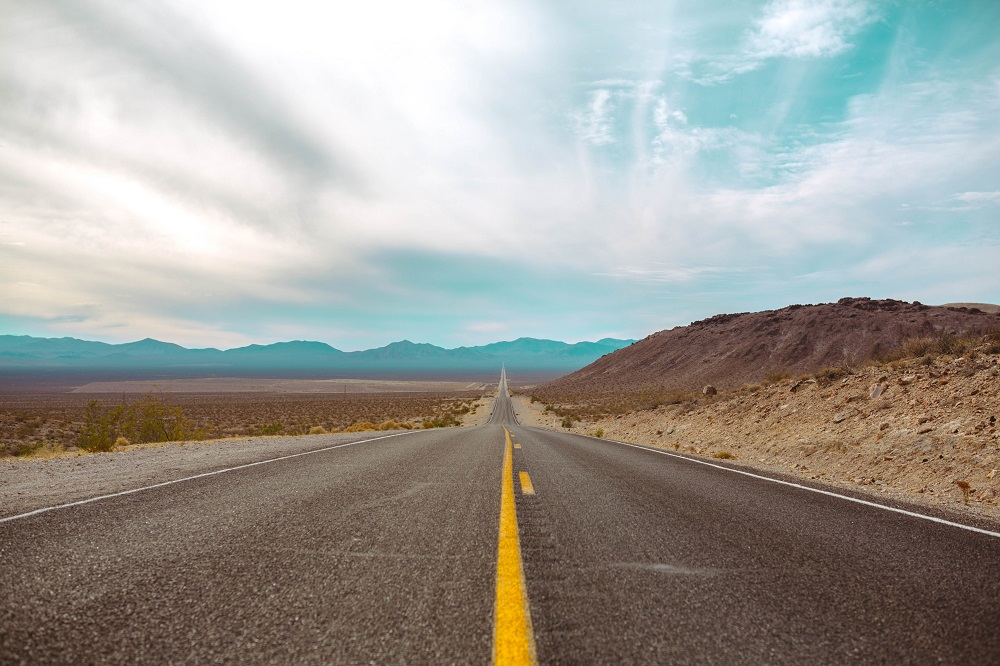
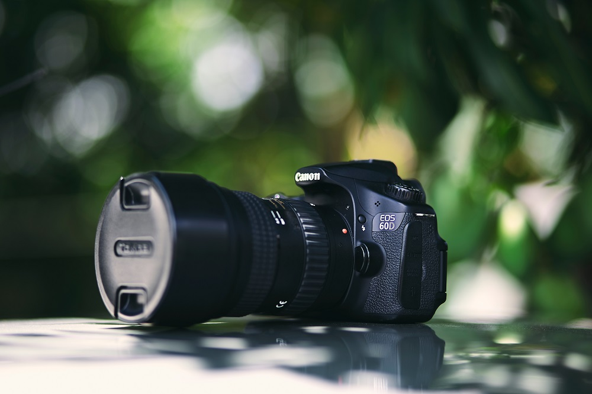
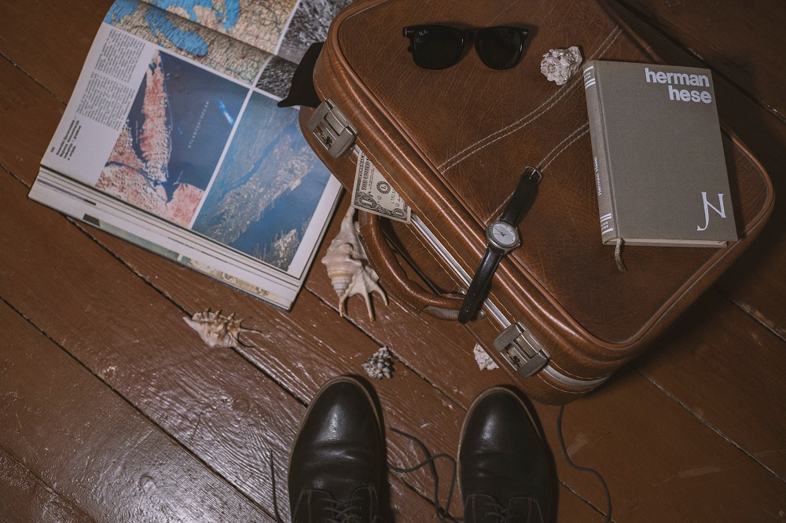

Encontrando nuevos caminos






Las zonas turísticas o los centros de las ciudades están muy bien porque allí encuentras los lugares más famosos o aquellos en los que quieres estar porque te lo recomendaban en la guía. Pero tengo un consejo: aléjate un poco. Ya sea que vayas a comer o a un supermercado a comprar algo te conviene alejarte para que las cosas te salgan más baratas. Obviamente que no te irás a la otra punta de la ciudad solo por unas monedas, sino que tienes que hacerlo porque tendrás más contacto con locales y visitarás sitios que, por estar fuera del circuito tradicional, lo convierten en algo único para el viajero.
Té, café o cacao en sobre y hasta las especias. Esas son solo algunas de las cosas que yo cargo en mi mochila cada vez que viajo a un lugar que sé que me podría costar mucho dinero. Cuando llega la noche vuelvo a mi alojamiento (por lo general una casa de familia) y allí me preparo una ensalada con mis condimentos o me tomo un té o un café. No descartes llevar incluso otras cosas para cocinar que ocupen poco sitio como arroz, por ejemplo.
Soy Sofia, viajo y escribo desde el 2002. Acá encontrarás relatos y fotografías de mis viajes por más de 20 países del mundo. Seguime por Instagram, Facebook y Twitter para ver el día a día de mis viajes.
Algunos piensan que un blog de viajes les permitirá viajar gratis, otros quieren usarlo como vidriera para vender sus artículos o fotografías, otros como una plataforma para conseguir sponsors o trabajo, algunos quieren compartir sus experiencias con otros viajeros, otros lo hacen por diversión o amor al arte. Todos los objetivos son válidos, pero me parece bueno que sepan qué les espera antes de empezar. Así como viajar genera muchas idealizaciones, también puede pasar que quieran abrir un blog por ilusiones que quizá sean difíciles de cumplir a corto plazo o que lleven mucho más trabajo del que piensan.
No sé por qué los blogs tienen fama de fáciles. Yo sé que visto de afuera todo parece muy sencillo: te sentás en la compu, escribís un artículo, elegís las fotos y dos horas después ya tenés tu trabajo listo y a otra cosa. Por eso hay mucha gente que no entiende que un blog pueda ser un trabajo. Pero, perdón, ¿dije dos horas? Ojalá, si fuese así subiría mínimo dos posts al día. Hay artículos que me llevan ocho horas, otros me llevan días, otros me llevan semanas. Y al final esto se convierte en una paradoja: te abriste un blog para relatar tus viajes pero estás más tiempo frente a la pantalla que viajando. Esa es una de las razones por las que viajo tan lento: no podría hacer un viaje rápido y además escribir un blog, no me darían los tiempos y no disfrutaría del viaje. Entonces, si te vas de viaje y vas a estar publicando, sabé que tendrás que dedicarle varias horas por día a este trabajo.